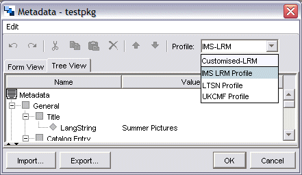

Customising RELOAD
RELOAD is ultimately a reference implementation for the IMS Content Packaging and Metadata Specifications.
Whilst we aim to make a fully functional editor, our intention is not to create a product which is highly specialised for a particular application. Rather, the RELOAD editor has been designed for maximum flexibility and customisability and it is hoped that individual developers will adapt the tool to their needs - feeding back any improvements and ideas to the RELOAD team in the spirit of Open Source. We are currently preparing some developer documentation which will be of use to anyone wishing to integrate their own code. The developer documentation will be distributed through the RELOAD sourceforge pages: http://www.sourceforge.net/projects/x4l-reload/
Supporting Other Application Profiles and Vocabularies
By default, RELOAD supports the IMS Metadata v1.2.2 and Content Packaging v1.1.3 specifications (as well as SCORM v1.2). However in practise, individual organisations will subtly adapt these specifications to meet their own requirements. For instance, when creating a metadata record for a content package, the core IMS specification is not a great deal of use as all the elements are optional - so a valid metadata record could consist of nothing more than an empty metadata element tag: <metadata /> If the eventual goal of adding a metadata record is interoperability (e.g. storage in a repository where your resource can be placed alongside other resources and retrieved using appropriate search criteria) then some rules (common practice) must be established governing:
In RELOAD, a standard profile is loaded by default. When you create a new Content Package or Metadata record, you can choose to load one of the supplied alternative profiles by clicking on the menu at the top left corner of each document and choosing from the drop down list. Note that if you are creating an IMS MD v1.1 record, only the default profile is offered (IMS MD 1.1 Profile). In addition to the default profiles, you can provide your own application profile, as described below.
Metadata Profiles
The RELOAD Editor itself doesn't know anything about individual application profiles and vocabularies, but will tailor the metadata form it displays based on any profile that it is supplied with. When you create a metadata file, a drop down box appears at the top left of the metadata form which allows you to specify a specific application profile. At present (v.1.2) three application profiles are included: IMS-LRM (the basic IMS Learning Resource Metadata profile), UKCMF v1.0 (UK Learning Object Metadata Common Framework) and LTSN v1.0, prepared by the Learning and Teaching Support Network - see the box below). The drop down list is populated automatically by the RELOAD editor which reads the contents of a folder of helper files situated at: [USER HOME]\reload\reload-editor\helpers\md\profile\ (this is for a windows install. Typically, the path to USER_HOME will be C:\Documents and Settings\your_username\ ). You can add your own application profile here.
The metadata helper directory structure is as follows (and the content packaging and scorm helper directory structures are the same): There are three directories, profile, schemahelper and vocab. The profile directory holds the profiles themselves, and these refer to a schemahelper file (which provides help text etc.) and a vocabulary file (which provides the correct vocabulary for a given profile).

To add a new profile, you need to provide three XML files, the profile itself, a schemahelper, and (optionally - you could use an existing one) a vocabulary. You would normally base your profile on an existing profile - so the easiest way to create a new profile is copy the relevant files, rename them and edit them.
The text snippet below shows the first few lines of the IMS-LRM profile XML file and shows how it refers to the schemahelper and vocab files:
<?xml version="1.0" encoding="UTF-8"?> <!-- RELOAD Metadata Profile --> <!-- This is the default Profile - do not edit or delete! --> <profile name="IMS-LRM" vocabfile="ims-lrm_en_vocab.xml" schemahelperfile="imsmd_en_helper.xml">
Once the files have been copied and renamed, edit the fourth line of your new profile file to reflect the 'profile name' - whatever you want to appear in the drop down list, and the names (if they have changed) of the 'vocab' and 'schema helper' files
Editing is a relatively straightforward process of going through the elements and sub-elements until you find the ones that are of relevance to you, then making the necessary change. The changes you might introduce could be to items listed in menus (vocabulary) or the language in which menu items are given. You may also wish to augment or replace the helper texts given - these may be used to give local guidance such as 'we recommend that for this item no more than two keyword are defined' or translated into a language other than English. The order in which elements appear can also be changed as the order of elements in the profile XML file defines the order on the metadata form: normally General, Lifecycle, Metametadata etc.
In the example below, a fourth profile 'Customised-LRM' has been included.

Once you have created a customised profile, you can set it to be the default profile by choosing View, Preferences ... and choosing the Metadata Preferences tab.
Pre-filling metadata fields is not currently possible in the Reload Editor. If you want to use the same metadata every time a record is created then make a standalone metadata file with this information, save it to the helpers directory somewhere and import it every time a new metadata record is created (watch out - it will override existing metadata).
| For the UK education community, an emerging application profile is being prepared under the auspices of CETIS and is entitled the UK Learning Object Metadata Framework (previously referred to as the UK Common Metadata Framework) For more information, see: http://www.cetis.ac.uk/profiles/uklomcore and in particular the document entitled: UK LOM Core v0.2 which effectively goes through the whole Learning Object Metadata specification and explains how the UK community interprets the various fields. |
Content Packaging Profiles
Profiling for IMS and SCORM Content Packages is achieved by editing the corresponding files in the cp and scorm directories under the helper tree.